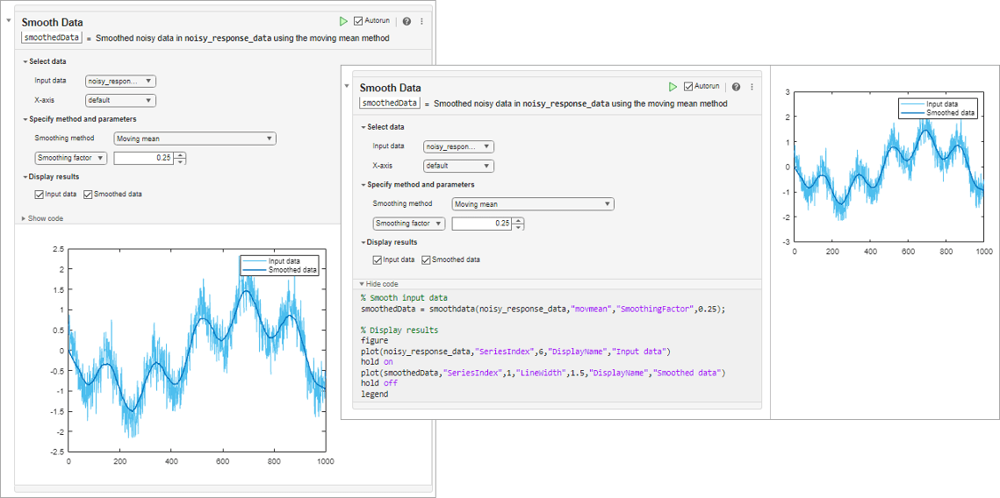
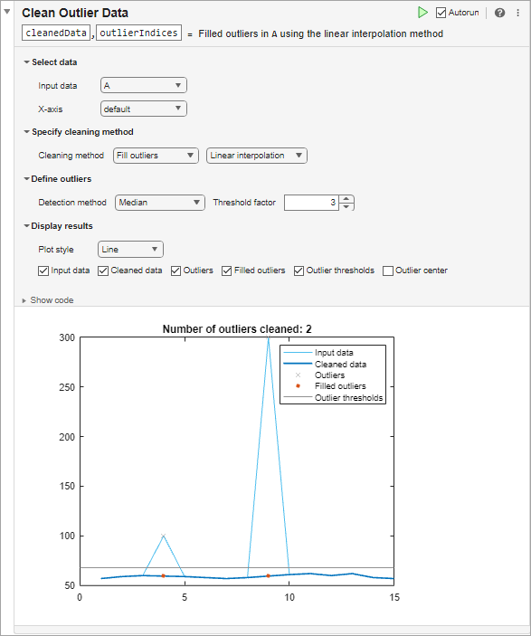
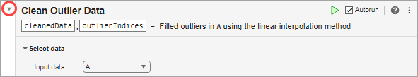
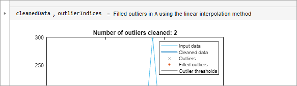
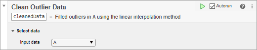
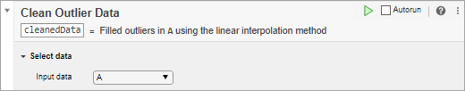
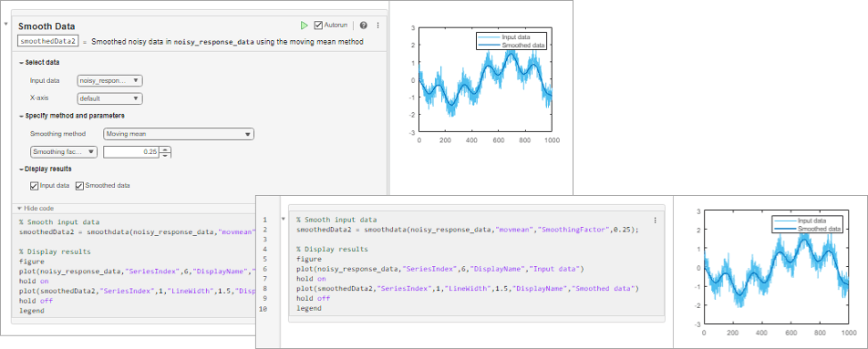

Add Interactive Tasks to a Live Script
What Are Live Editor Tasks?
Live Editor tasks are simple point-and-click interfaces that can be added to a live script to perform a specific set of operations. You can add tasks to live scripts to explore parameters and automatically generate code. Use tasks to reduce development time, errors, and time spent plotting.
Tasks represent a series of MATLAB® commands. You can display their output either inline or on the right. To see the MATLAB commands that the task runs, show the generated code.

Insert Tasks
To add a task to a live script, go to the Live Editor tab,
click
Task
 , and select from the available tasks. You also
can type the name of the task in a live script code block. As you type, the Live
Editor displays possible matches, and you can select and insert the desired task.
For example, create a live script that creates a vector of data containing an
outlier.
, and select from the available tasks. You also
can type the name of the task in a live script code block. As you type, the Live
Editor displays possible matches, and you can select and insert the desired task.
For example, create a live script that creates a vector of data containing an
outlier.
A = [57 59 60 100 59 58 57 58 300 61 62 60 62 58 57];
Add the Create Plot task to your live script to plot the vector of data.

Add the Clean Outlier Data task to your live
script to smooth the noisy data and avoid skewed results. To add the task, start
typing the word clean in the live script and select
Clean Outlier Data from the suggested command completions. In
the task, set Input data to A. The task
identifies and fills two outliers in the data and creates the variable
cleanedData in the MATLAB workspace with the stored results. You also can see the results in the
output plot for the task. Continue modifying additional parameters until you are
satisfied with the results.

Restore Default Parameters
To restore all parameter values back to their defaults, click the Options button in the top-right corner of the task and select Restore Default Values.
Collapse Tasks for Improved Readability
When you are done modifying parameters, you can collapse the task to help with readability. To collapse the task, click the arrow at the top-left of the task.

The task displays as a single, user-readable line of pseudocode with output.

Delete Tasks
To delete a task, click the Options button in the top-right corner of the task and select Remove Task. Alternatively, select the task and then press the Delete or Backspace key.
Run Tasks and Surrounding Code
By default, as you modify the value of parameters in the task, the task and
current section (including other tasks in the section) run automatically. This
ensures that the results and surrounding code in the section remain up to date. For
example, in the live script cleanmydata.mlx, the entire section
including the code that creates the vector of noisy data reruns every time you
modify the value of a parameter in the Clean Outlier Data task.
The selected Autorun checkbox in the top-right corner of the task window indicates that the task runs automatically when you modify the task parameters.

To disable running the task automatically when you modify the task parameters, clear the Autorun checkbox. Then, to run the task and current section, click the Run current section button to the left of the Autorun checkbox. Some tasks do not run automatically by default. This default setting ensures optimal performance for those tasks.

You also can change what code runs when the values of parameters in the task change. To change what code runs, click the Options button in the top-right corner of the task, select Run Configuration and then select from the available options:
Current section (default) — Run the section that contains the task. To run only the task, add section breaks before and after the task. For more information about sections and how to add section breaks, see Create and Run Sections in Code.
Current section and modified or not yet run sections above — Run the current section and any modified or not-yet-run code above the task. If the live script has not yet been run, changing the values of parameters in the task runs the current section and all sections before it.
Current section to end — Run the section that contains the task and any sections that follow.
All sections — Run all sections in the live script.
Modify Output Argument Name
To modify the name of the output argument, click the text box containing the argument name and enter a new name.

You can use the resulting output argument in subsequent code, including as inputs to additional Live Editor tasks.
View and Edit Generated Code
To see the MATLAB commands that the task runs, click the Options button in the top-right corner of the task and select either Controls and Code or Code Only. You also can use the arrow at the bottom-left corner of the task to show and hide the generated code. The generated code is read-only.
To edit the generated code, click the Options button and select Convert to Code. This option removes the task and replaces it with the generated code, which you then can edit.

Custom Live Editor Tasks
You can create your own Live Editor tasks to perform a set of operations specific to your workflow. You can then add your Live Editor tasks to your own live scripts or share them with others. For more information, see Live Editor Task Development Overview.